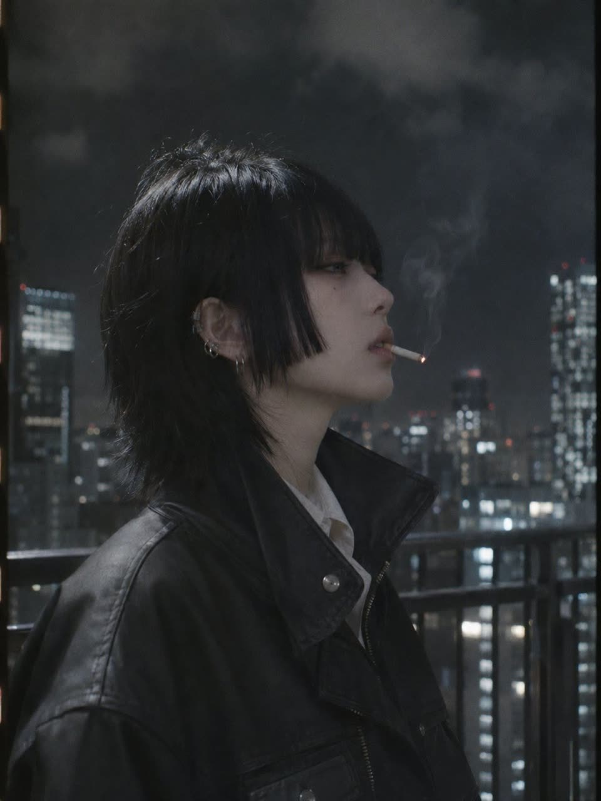

Night balcony side profile shot "on a 35mm motion picture camera": film-gate edge, fine grain, smoke and city bokeh (ChatGPT Images 2.6)
GRN-103Grain / FilterChatGPT Images 2.6by @johnAGI1682026-11-25

A moody night portrait with a visible film-frame edge, fine 35mm grain, real skin and matte leather texture and soft city bokeh behind a hime-cut wolf bob. The prompt is a good example of naming the capture medium ("captured on a 35mm motion picture camera", "photographed on real film, never CGI") to get film texture from an image model. Note: the subject is smoking, so swap the cigarette out for brand work.
Prompt
A cinematic night still photograph captured on a 35mm motion picture camera — an intimate 3:4 vertical side-profile chest-up portrait of a cool, strikingly beautiful young East Asian woman standing on a high-rise balcony at night, gazing pensively into the dark cityscape. She features refined, melancholic East Asian facial features: fair pale porcelain skin, a delicate straight nose, sharp jawline, and long-lashed, drowsy dark eyes looking sideways away from the camera. Her jet-black straight hair is styled in a distinctive hime-cut wolf bob — thick blunt bangs grazing her eyes, sharp jaw-length blunt side locks framing her cheek, and shaggy layered strands at the nape. Her visible left ear is adorned with multiple edgy silver and black ear cuffs and small hoop piercings. A thin lit cigarette rests casually between her lips, with a delicate wisp of translucent gray smoke curling upward into the cool night air. She wears an oversized matte black leather utility jacket with a high popped collar and snap-button detail, layered over a crisp off-white collared shirt peeking at the throat. The setting is an urban rooftop terrace with dark metal railings overlooking a sprawling metropolitan night skyline. Out-of-focus skyscrapers dotted with cool glowing windows sit beneath brooding charcoal clouds. The color palette is a moody, desaturated monochromatic slate-gray cinema grade, with cool ambient city skylight softly catching her hair, profile, and leather collar. Captured on an 85mm cinema prime lens at f/1.8 for rich night bokeh. Real human skin with fine pores, subtle biological subsurface scattering, tactile matte leather grain, wispy smoke physics, and fine 35mm film grain — photographed on real film, never CGI, never plastic, never 3D render.
Tags: GPT Image 2.6, 35mm motion picture, film grain, film gate edge, night portrait, bokeh, side profile